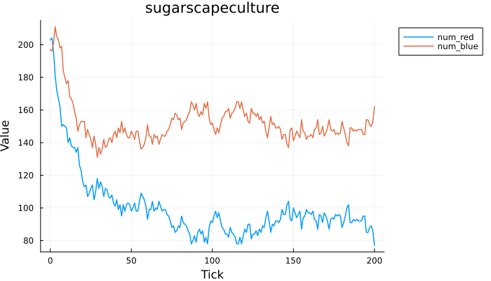
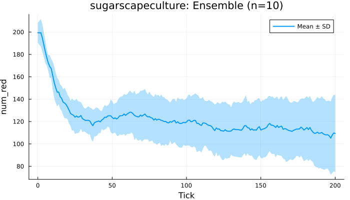
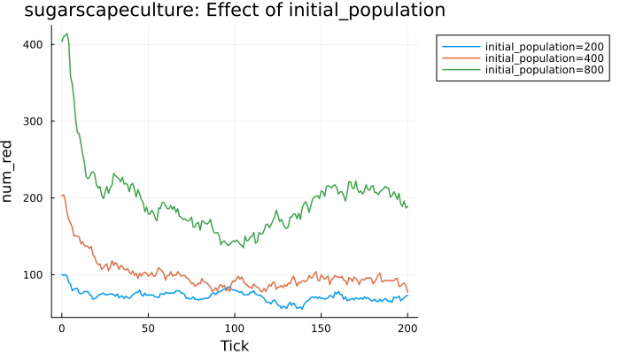

Sugarscape Culture
Overview
This vignette demonstrates the Sugarscape Culture model implemented in ArkModelZoo.jl using the Ark.jl ECS framework.
Parameters
| Parameter | Type | Default | Description |
|---|---|---|---|
initial_population | Int | 400 | initial population |
grid_width | Int | 50 | grid width |
grid_height | Int | 50 | grid height |
max_ticks | Int | 200 | max ticks |
Source Code
The Julia code to run this model:
using ArkModelZoo
_, trajectory = run_sugarscapeculture()Time Series

Ensemble Runs
Ten replicates with different random seeds, showing mean ± standard deviation.

Parameter Sensitivity
Varying initial_population.

Appendix: Source Code
This model is implemented in the Ark.jl Entity-Component-System (ECS) framework. The code is split into five files, each with a distinct role:
- Parameters: a mutable struct holding all configurable values.
- Components: lightweight data types attached to individual entities (agents).
- Resources: world-level shared state accessible to all systems.
- Systems: functions that operate on entities each tick, defining model behavior.
- Model: wiring that assembles the world, registers resources and systems, and provides the run entry point.
Parameters (parameters.jl)
The parameter struct uses @kwdef so that every field has a default value and can be overridden by keyword. These defaults match the original NetLogo model’s slider settings.
Base.@kwdef mutable struct SCParams
initial_population::Int = 400
grid_width::Int = 50
grid_height::Int = 50
max_ticks::Int = 200
seed::Int = 42
endComponents (components.jl)
Components are lightweight data types attached to individual entities (agents). Mutable structs hold per-entity state, while empty tag structs act as markers for the ECS query system to efficiently filter entities.
struct SCDummy endResources (resources.jl)
Resources are world-level singletons shared across all systems, used for global state and aggregate statistics.
# 50×50 sugar landscape from the NetLogo Sugarscape Culture model.
# SC_SUGAR_LANDSCAPE[i, j] corresponds to NetLogo matrix row (i-1), column (j-1).
# Patch mapping: max_psugar[x, y] = SC_SUGAR_LANDSCAPE[x, 51 - y]
const SC_SUGAR_LANDSCAPE = [
0 0 0 0 0 0 0 0 0 0 0 0 0 0 0 0 0 0 1 1 1 1 1 1 1 1 1 2 2 2 2 2 2 2 2 2 3 3 3 3 3 3 2 2 2 2 2 2 2 2;
0 0 0 0 0 0 0 0 0 0 0 0 0 0 0 0 0 0 1 1 1 1 1 1 1 1 2 2 2 2 2 2 2 2 3 3 3 3 3 3 3 3 3 3 2 2 2 2 2 2;
0 0 0 0 0 0 0 0 0 0 0 0 0 0 0 0 0 1 1 1 1 1 1 1 1 2 2 2 2 2 2 2 3 3 3 3 3 3 3 3 3 3 3 3 3 3 2 2 2 2;
0 0 0 0 0 0 0 0 0 0 0 0 0 0 0 0 0 1 1 1 1 1 1 1 1 2 2 2 2 2 2 3 3 3 3 3 3 3 3 3 3 3 3 3 3 3 3 2 2 2;
0 0 0 0 0 0 0 0 0 0 0 0 0 0 0 0 0 1 1 1 1 1 1 1 2 2 2 2 2 2 3 3 3 3 3 3 3 3 3 3 3 3 3 3 3 3 3 3 2 2;
0 0 0 0 0 0 0 0 0 0 0 0 0 0 0 0 1 1 1 1 1 1 1 1 2 2 2 2 2 2 3 3 3 3 3 3 3 4 4 4 4 3 3 3 3 3 3 3 2 2;
0 0 0 0 0 0 0 0 0 0 0 0 0 0 0 1 1 1 1 1 1 1 1 1 2 2 2 2 2 3 3 3 3 3 3 4 4 4 4 4 4 4 4 3 3 3 3 3 3 2;
0 0 0 0 0 0 0 0 0 0 0 0 0 0 0 1 1 1 1 1 1 1 1 2 2 2 2 2 2 3 3 3 3 3 4 4 4 4 4 4 4 4 4 4 3 3 3 3 3 2;
0 0 0 0 0 0 0 0 0 0 0 0 0 0 1 1 1 1 1 1 1 1 1 2 2 2 2 2 3 3 3 3 3 3 4 4 4 4 4 4 4 4 4 4 3 3 3 3 3 3;
0 0 0 0 0 0 0 0 0 0 0 0 0 1 1 1 1 1 1 1 1 1 1 2 2 2 2 2 3 3 3 3 3 4 4 4 4 4 4 4 4 4 4 4 4 3 3 3 3 3;
0 0 0 0 0 0 0 0 0 0 0 0 1 1 1 1 1 1 1 1 1 1 2 2 2 2 2 2 3 3 3 3 3 4 4 4 4 4 4 4 4 4 4 4 4 3 3 3 3 3;
0 0 0 0 0 0 0 0 0 0 0 1 1 1 1 1 1 1 1 1 1 1 2 2 2 2 2 2 3 3 3 3 3 4 4 4 4 4 4 4 4 4 4 4 4 3 3 3 3 3;
0 0 0 0 0 0 0 0 0 0 1 1 1 1 1 1 1 1 1 1 1 1 2 2 2 2 2 2 3 3 3 3 3 4 4 4 4 4 4 4 4 4 4 4 4 3 3 3 3 3;
0 0 0 0 0 0 0 0 0 1 1 1 1 1 1 1 1 1 1 1 1 1 2 2 2 2 2 2 3 3 3 3 3 3 4 4 4 4 4 4 4 4 4 4 3 3 3 3 3 3;
0 0 0 0 0 0 0 1 1 1 1 1 1 1 1 1 1 1 1 1 1 2 2 2 2 2 2 2 3 3 3 3 3 3 4 4 4 4 4 4 4 4 4 4 3 3 3 3 3 2;
0 0 0 0 0 1 1 1 1 1 1 1 1 1 1 1 1 1 1 1 2 2 2 2 2 2 2 2 3 3 3 3 3 3 3 4 4 4 4 4 4 4 4 3 3 3 3 3 3 2;
1 1 1 1 1 1 1 1 1 1 1 1 1 1 1 1 1 1 1 2 2 2 2 2 2 2 2 2 3 3 3 3 3 3 3 3 3 4 4 4 4 3 3 3 3 3 3 3 2 2;
1 1 1 1 1 1 1 1 1 1 1 1 1 1 1 1 1 1 2 2 2 2 2 2 2 2 2 2 2 3 3 3 3 3 3 3 3 3 3 3 3 3 3 3 3 3 3 3 2 2;
1 1 1 1 1 1 1 1 1 1 1 1 1 1 1 2 2 2 2 2 2 2 2 2 2 2 2 2 2 3 3 3 3 3 3 3 3 3 3 3 3 3 3 3 3 3 3 2 2 2;
1 1 1 1 1 1 1 1 1 1 2 2 2 2 2 2 2 2 2 2 2 2 2 2 2 2 2 2 2 2 3 3 3 3 3 3 3 3 3 3 3 3 3 3 3 3 2 2 2 2;
1 1 1 1 1 1 1 1 2 2 2 2 2 2 2 2 2 2 2 2 2 2 2 2 2 2 2 2 2 2 2 3 3 3 3 3 3 3 3 3 3 3 3 3 2 2 2 2 2 2;
1 1 1 1 1 1 2 2 2 2 2 2 2 2 2 2 2 2 2 2 2 2 2 2 2 2 2 2 2 2 2 2 2 3 3 3 3 3 3 3 3 3 2 2 2 2 2 2 2 2;
1 1 1 1 2 2 2 2 2 2 2 2 2 2 2 2 2 2 2 2 2 2 2 2 2 2 2 2 2 2 2 2 2 2 2 2 2 2 2 2 2 2 2 2 2 2 2 2 2 1;
1 1 1 2 2 2 2 2 2 2 2 2 2 2 2 2 2 2 2 2 2 2 2 2 2 2 2 2 2 2 2 2 2 2 2 2 2 2 2 2 2 2 2 2 2 2 2 2 1 1;
1 1 2 2 2 2 2 2 2 2 2 2 3 3 3 3 3 3 3 3 3 2 2 2 2 2 2 2 2 2 2 2 2 2 2 2 2 2 2 2 2 2 2 2 2 2 2 1 1 1;
1 2 2 2 2 2 2 2 2 2 3 3 3 3 3 3 3 3 3 3 3 3 3 2 2 2 2 2 2 2 2 2 2 2 2 2 2 2 2 2 2 2 2 2 2 1 1 1 1 1;
1 2 2 2 2 2 2 2 3 3 3 3 3 3 3 3 3 3 3 3 3 3 3 3 2 2 2 2 2 2 2 2 2 2 2 2 2 2 2 2 2 2 1 1 1 1 1 1 1 1;
2 2 2 2 2 2 2 3 3 3 3 3 3 3 3 3 3 3 3 3 3 3 3 3 3 2 2 2 2 2 2 2 2 2 2 2 2 2 1 1 1 1 1 1 1 1 1 1 1 1;
2 2 2 2 2 2 3 3 3 3 3 3 3 3 3 3 3 3 3 3 3 3 3 3 3 2 2 2 2 2 2 2 2 2 2 2 2 1 1 1 1 1 1 1 1 1 1 1 1 1;
2 2 2 2 2 2 3 3 3 3 3 3 3 4 4 4 4 3 3 3 3 3 3 3 3 3 2 2 2 2 2 2 2 2 2 2 1 1 1 1 1 1 1 1 1 1 1 1 1 1;
2 2 2 2 2 3 3 3 3 3 3 4 4 4 4 4 4 4 4 3 3 3 3 3 3 3 2 2 2 2 2 2 2 2 2 2 1 1 1 1 1 1 1 1 1 1 1 0 0 0;
2 2 2 2 2 3 3 3 3 3 4 4 4 4 4 4 4 4 4 4 3 3 3 3 3 3 2 2 2 2 2 2 2 2 1 1 1 1 1 1 1 1 1 1 1 1 0 0 0 0;
2 2 2 2 3 3 3 3 3 3 4 4 4 4 4 4 4 4 4 4 3 3 3 3 3 3 2 2 2 2 2 2 2 2 1 1 1 1 1 1 1 1 1 1 0 0 0 0 0 0;
2 2 2 2 3 3 3 3 3 4 4 4 4 4 4 4 4 4 4 4 4 3 3 3 3 3 2 2 2 2 2 2 1 1 1 1 1 1 1 1 1 1 0 0 0 0 0 0 0 0;
2 2 2 2 3 3 3 3 3 4 4 4 4 4 4 4 4 4 4 4 4 3 3 3 3 3 2 2 2 2 2 2 1 1 1 1 1 1 1 1 1 1 0 0 0 0 0 0 0 0;
2 2 2 2 3 3 3 3 3 4 4 4 4 4 4 4 4 4 4 4 4 3 3 3 3 3 2 2 2 2 2 2 1 1 1 1 1 1 1 1 1 0 0 0 0 0 0 0 0 0;
2 2 2 2 3 3 3 3 3 4 4 4 4 4 4 4 4 4 4 4 4 3 3 3 3 3 2 2 2 2 2 1 1 1 1 1 1 1 1 1 0 0 0 0 0 0 0 0 0 0;
2 2 2 2 3 3 3 3 3 3 4 4 4 4 4 4 4 4 4 4 3 3 3 3 3 3 2 2 2 2 2 1 1 1 1 1 1 1 1 0 0 0 0 0 0 0 0 0 0 0;
2 2 2 2 2 3 3 3 3 3 4 4 4 4 4 4 4 4 4 4 3 3 3 3 3 2 2 2 2 2 2 1 1 1 1 1 1 1 1 0 0 0 0 0 0 0 0 0 0 0;
2 2 2 2 2 3 3 3 3 3 3 4 4 4 4 4 4 4 4 3 3 3 3 3 3 2 2 2 2 2 1 1 1 1 1 1 1 1 0 0 0 0 0 0 0 0 0 0 0 0;
2 2 2 2 2 2 3 3 3 3 3 3 3 4 4 4 4 3 3 3 3 3 3 3 2 2 2 2 2 2 1 1 1 1 1 1 1 0 0 0 0 0 0 0 0 0 0 0 0 0;
2 2 2 2 2 2 3 3 3 3 3 3 3 3 3 3 3 3 3 3 3 3 3 3 2 2 2 2 2 2 1 1 1 1 1 1 1 0 0 0 0 0 0 0 0 0 0 0 0 0;
2 2 2 2 2 2 2 3 3 3 3 3 3 3 3 3 3 3 3 3 3 3 3 2 2 2 2 2 2 1 1 1 1 1 1 1 1 0 0 0 0 0 0 0 0 0 0 0 0 0;
1 2 2 2 2 2 2 2 3 3 3 3 3 3 3 3 3 3 3 3 3 3 2 2 2 2 2 2 1 1 1 1 1 1 1 1 1 0 0 0 0 0 0 0 0 0 0 0 0 0;
1 2 2 2 2 2 2 2 2 2 3 3 3 3 3 3 3 3 3 3 2 2 2 2 2 2 2 2 1 1 1 1 1 1 1 1 1 0 0 0 0 0 0 0 0 0 0 0 0 0;
1 1 2 2 2 2 2 2 2 2 2 2 3 3 3 3 3 3 2 2 2 2 2 2 2 2 2 1 1 1 1 1 1 1 1 1 1 0 0 0 0 0 0 0 0 0 0 0 0 0;
1 1 1 2 2 2 2 2 2 2 2 2 2 2 2 2 2 2 2 2 2 2 2 2 2 2 1 1 1 1 1 1 1 1 1 1 0 0 0 0 0 0 0 0 0 0 0 0 0 0;
1 1 1 1 2 2 2 2 2 2 2 2 2 2 2 2 2 2 2 2 2 2 2 2 2 1 1 1 1 1 1 1 1 1 1 1 0 0 0 0 0 0 0 0 0 0 0 0 0 0;
1 1 1 1 1 1 2 2 2 2 2 2 2 2 2 2 2 2 2 2 2 2 2 1 1 1 1 1 1 1 1 1 1 1 1 1 0 0 0 0 0 0 0 0 0 0 0 0 0 0;
1 1 1 1 1 1 1 1 2 2 2 2 2 2 2 2 2 2 2 2 2 1 1 1 1 1 1 1 1 1 1 1 1 1 1 0 0 0 0 0 0 0 0 0 0 0 0 0 0 0
]
mutable struct SCAgent
x::Int
y::Int
sugar::Int
metabolism::Int
vision::Int
culture::Vector{Int} # 11 elements, each 0 or 1
end
mutable struct SCWorld
width::Int
height::Int
psugar::Matrix{Int}
max_psugar::Matrix{Int}
agents::Vector{SCAgent}
occupant::Matrix{Int} # 0 = empty, positive = index into agents
end
function SCWorld(w::Int, h::Int)
SCWorld(w, h, zeros(Int, w, h), zeros(Int, w, h), SCAgent[], zeros(Int, w, h))
end
mutable struct SCStats
num_red::Int
num_blue::Int
end
SCStats() = SCStats(0, 0)Systems (systems.jl)
Systems contain the model logic and execute in a defined order each tick. Each system struct implements either initialize! (run once at setup) or update! (run every tick).
# Sugarscape Culture — sugar harvesting with cultural tag diffusion on a 50×50 grid
struct InitSCSystem <: System end
function _sc_update_stats!(world_data::SCWorld, stats::SCStats)
nr = 0
nb = 0
for agent in world_data.agents
if sum(agent.culture) > 5
nr += 1
else
nb += 1
end
end
stats.num_red = nr
stats.num_blue = nb
end
function initialize!(::InitSCSystem, world::World)
params = get_resource(world, SCParams)
rng = get_resource(world, RNGResource).rng
world_data = get_resource(world, SCWorld)
stats = get_resource(world, SCStats)
w, h = world_data.width, world_data.height
# Initialize sugar landscape
for x in 1:w, y in 1:h
world_data.max_psugar[x, y] = SC_SUGAR_LANDSCAPE[x, 51 - y]
end
world_data.psugar .= world_data.max_psugar
# Create agents at random unoccupied patches
for _ in 1:params.initial_population
while true
x = rand(rng, 1:w)
y = rand(rng, 1:h)
if world_data.occupant[x, y] == 0
agent = SCAgent(
x, y,
rand(rng, 5:25),
rand(rng, 1:4),
rand(rng, 1:6),
[rand(rng, 0:1) for _ in 1:11]
)
push!(world_data.agents, agent)
world_data.occupant[x, y] = length(world_data.agents)
break
end
end
end
_sc_update_stats!(world_data, stats)
return nothing
end
# --- Main simulation step ---
struct SCGoSystem <: System end
function update!(::SCGoSystem, world::World)
rng = get_resource(world, RNGResource).rng
world_data = get_resource(world, SCWorld)
stats = get_resource(world, SCStats)
w, h = world_data.width, world_data.height
agents = world_data.agents
n = length(agents)
if n == 0
_sc_update_stats!(world_data, stats)
return nothing
end
# Growback all patches
for x in 1:w, y in 1:h
world_data.psugar[x, y] = min(world_data.max_psugar[x, y], world_data.psugar[x, y] + 1)
end
# Shuffled agent processing order
order = shuffle!(rng, collect(1:n))
# Neighbor offsets (N, E, S, W)
neighbor_dx = (0, 1, 0, -1)
neighbor_dy = (1, 0, -1, 0)
for idx in order
agent = agents[idx]
if agent.sugar <= 0
continue # already dead this tick
end
# --- Culture step ---
ax, ay = agent.x, agent.y
neighbor_ids = Int[]
for k in 1:4
nx = mod1(ax + neighbor_dx[k], w)
ny = mod1(ay + neighbor_dy[k], h)
occ = world_data.occupant[nx, ny]
if occ != 0 && agents[occ].sugar > 0
push!(neighbor_ids, occ)
end
end
if !isempty(neighbor_ids)
tag_idx = rand(rng, 1:11)
my_tag = agent.culture[tag_idx]
shuffle!(rng, neighbor_ids)
for nid in neighbor_ids
if agents[nid].culture[tag_idx] != my_tag
agents[nid].culture[tag_idx] = my_tag
end
end
end
# --- Move step ---
# Candidates: current patch + unoccupied vision patches along 4 axes
best_sugar = world_data.psugar[ax, ay]
best_dist = 0
# Collect all candidates as (x, y, sugar, dist)
cand_x = [ax]
cand_y = [ay]
cand_s = [world_data.psugar[ax, ay]]
cand_d = [0]
for n in 1:agent.vision
for (dx, dy) in ((0, n), (n, 0), (0, -n), (-n, 0))
nx = mod1(ax + dx, w)
ny = mod1(ay + dy, h)
if world_data.occupant[nx, ny] == 0
push!(cand_x, nx)
push!(cand_y, ny)
push!(cand_s, world_data.psugar[nx, ny])
push!(cand_d, n)
end
end
end
# Find max sugar among candidates
max_s = maximum(cand_s)
# Among max-sugar candidates, find min distance
min_d = typemax(Int)
for i in eachindex(cand_s)
if cand_s[i] == max_s && cand_d[i] < min_d
min_d = cand_d[i]
end
end
# Collect best candidates (max sugar, min distance)
best_ids = Int[]
for i in eachindex(cand_s)
if cand_s[i] == max_s && cand_d[i] == min_d
push!(best_ids, i)
end
end
chosen = best_ids[rand(rng, 1:length(best_ids))]
new_x, new_y = cand_x[chosen], cand_y[chosen]
if new_x != ax || new_y != ay
world_data.occupant[ax, ay] = 0
agent.x = new_x
agent.y = new_y
world_data.occupant[new_x, new_y] = idx
end
# --- Eat step ---
agent.sugar = agent.sugar - agent.metabolism + world_data.psugar[agent.x, agent.y]
world_data.psugar[agent.x, agent.y] = 0
# --- Death check ---
if agent.sugar <= 0
world_data.occupant[agent.x, agent.y] = 0
end
end
# Remove dead agents and rebuild occupant grid
alive = SCAgent[]
for agent in agents
if agent.sugar > 0
push!(alive, agent)
end
end
world_data.agents = alive
fill!(world_data.occupant, 0)
for (i, agent) in enumerate(world_data.agents)
world_data.occupant[agent.x, agent.y] = i
end
_sc_update_stats!(world_data, stats)
return nothing
end
# --- Termination ---
struct SCTerminationSystem <: System end
function update!(::SCTerminationSystem, world::World)
params = get_resource(world, SCParams)
tick = get_resource(world, Tick)
world_data = get_resource(world, SCWorld)
if isempty(world_data.agents) || tick.tick + 1 >= params.max_ticks
get_resource(world, Terminate).stop = true
end
return nothing
endModel (model.jl)
The model file assembles all pieces: it creates the ECS World with the required component types, registers resources, builds the Scheduler with systems in execution order, and exposes the public run entry point. The observer pattern records the trajectory each tick.
function sugarscapeculture_world(; initial_capacity::Int = 128)
return World(SCDummy; initial_capacity = initial_capacity, allow_mutable = true)
end
function sugarscapeculture_systems()
return (InitSCSystem(), SCGoSystem(), SCTerminationSystem())
end
function sugarscapeculture_model(params::SCParams = SCParams())
world = sugarscapeculture_world()
_add_standard_resources!(world, params)
add_resource!(world, SCWorld(params.grid_width, params.grid_height))
add_resource!(world, SCStats())
scheduler = Scheduler(world, sugarscapeculture_systems())
initialize!(scheduler)
return scheduler
end
struct SCObserver end
function sugarscapeculture_headers(::SCObserver)
return ["num_red", "num_blue"]
end
function sugarscapeculture_values(::SCObserver, world::World)
stats = get_resource(world, SCStats)
return Float64[stats.num_red, stats.num_blue]
end
function run_sugarscapeculture(; params::SCParams = SCParams(), observe::Bool = true)
return _run_model(sugarscapeculture_model, SCObserver(), sugarscapeculture_values; params, observe)
end